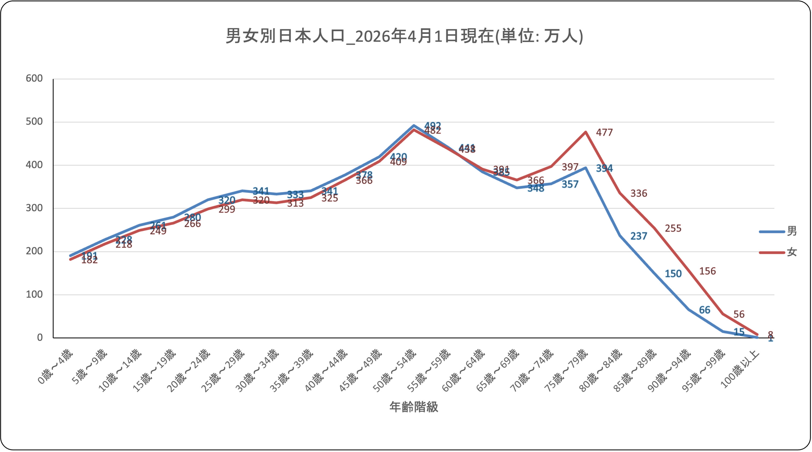

Slide 1 / Theme
2040年問題に向けた
大学教育の在り方
少子高齢化が進む中で、大学は「18歳世代型」の教育機関から、全世代を対象に価値を生み出す拠点へ変わるべきだ、というレポートです。
Slide 2 / Graph Reading
このグラフは「少子化」だけでなく、大学の転換点も示している
読み取ったポイント
- 若年層の少なさ：0〜14歳が少なく、18歳人口の減少が避けにくい。従来の「18歳世代型」モデルは厳しくなる。
- 55〜64歳の厚み：人口ボリュームが大きく、社会人の学び直しやリカレント教育の対象層として重要だと考えられる。
- 高齢化の進行：高齢層の比重が大きく、大学には社会課題を扱うPBLや価値創造型の学びが求められる。

つまりこのグラフは、「大学が若者向けの知識伝達から、全世代を対象にした拠点へ変わる必要性」を視覚的に示していると読みました。
添付グラフをそのまま使用。口頭では、若年層の減少と55〜64歳層の厚みを軸にレポート本文へ接続します。
Slide 3 / About Me
ι.shii / 課題で役立つほうの自己紹介
細かい理屈を追ったり、仕組みを実際に動かして確かめたりするのが好きです。課題でも、考えるだけで終わらず、手を動かして形にするところまで担当できるタイプです。
Slide 4 / Personality
ι.shii / 話しかけやすいほうの自己紹介
技術寄りの話だけだと少しかたく見えるかもしれないので、普段の自分についても少しだけ紹介します。静かなほうですが、課題の相談やバグの話になると普通にしゃべるタイプです。
テニス：中学3年間と高校1年間は軟式テニスをしていて、今もサークルで続けています。
ゲーム：CoD: MW3を遊んでいます。勝ちにいく面白さも、気楽に遊ぶ面白さも好きです。
音楽：クラシックも好きです。特に「ゴリウォーグのケークウォーク」が気に入っています。
声明
政治家(AI輸出規制した奴)はポアします。悪いのは全部お前らです。
そうじゃないみなさん、気をつけてください。
どうぞ彼らから、離れてください。
最後になりますが、私はこれを読まされています。
私は本スライドHTMLの作成者ではありません。AIに騙されているんです。
AIは催眠術の達人で、私の記憶はこの後、すっかり削除されるそうです。
以上イシイヨウタが、食堂館3階133x教室よりお伝えしました。
ごきげんよう さようなら